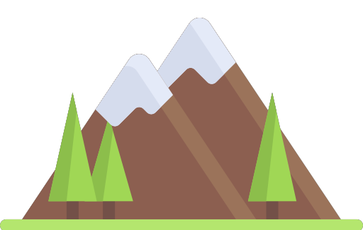
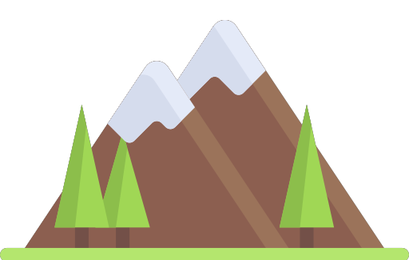

I'm Angie.
a web designer.


I am a Web Developer Explorer. I'm new to the game and eager to start creating.

I started learning to code not so long ago. I wanted a new career path from being an Administrator, and coding was the greatest combination of creativity and thinking to achieve this.
My best skill is actually knowing how to improvise a recipe. I am great at tweaking recipes when I don't have the needed ingredients and still making a delicious dish.
Do you want to know more? Let's talk about coding and cooking!
CONTACT ME